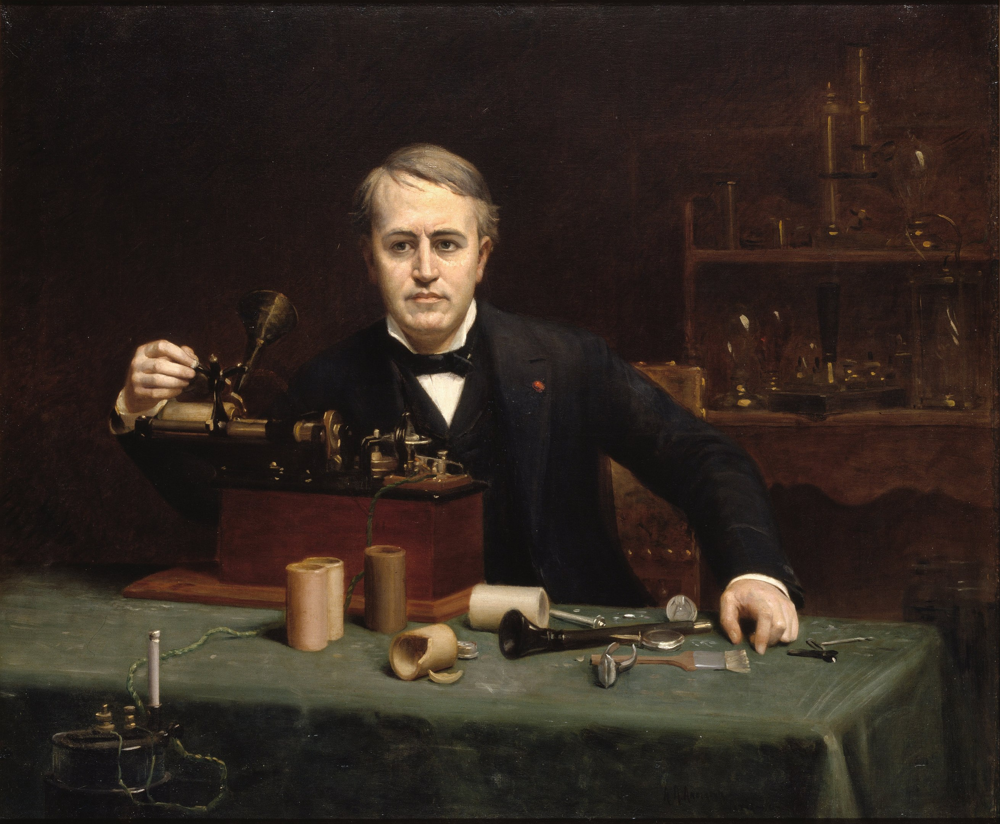

Thomas Edison
1847 - 1931
One of the most famous and productive inventors
Thomas Alva Edison (February 11, 1847 – October 18, 1931) was an American inventor and businessman. He developed many devices in fields such as electric power generation, mass communication, sound recording, and motion pictures.

Portrait of Edison by Abraham Archibald Anderson (1890), National Portrait Gallery
The following is list of awards given to Edison during his lifetime
- 1878 - awarded an honorary PhD from Union College.
- 1889 - was named the recipient of the John Scott Medal.
- 1890 - elected a member of the Royal Swedish Academy of Sciences.
- 1899 - awarded the Edward Longstreth Medal of The Franklin Institute.
- 1904 - named an Honorable Consulting Engineer at the Louisiana Purchase Exposition World's fair.
- 1908 - received the American Association of Engineering Societies John Fritz Medal.
- 1915 - awarded Franklin Medal of The Franklin Institute for discoveries contributing to the foundation of industries and the well-being of the human race.
- 1920 - awarded the Navy Distinguished Service Medal.
- 1923 - the American Institute of Electrical Engineers created the Edison Medal, and he was its first recipient
- 1927 - granted membership in the National Academy of Sciences.
- 1928 - received the Congressional Gold Medal.
Read more about Thomas Edison on Wikipedia